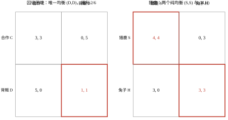
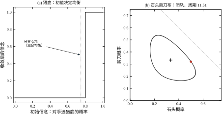
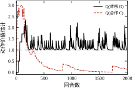
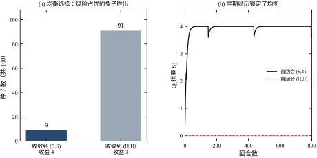
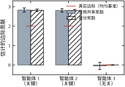
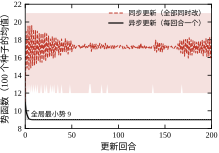

上一章的一致性协议有一个隐含前提：所有个体想要的是同一件事。四台 AGV 保持同一个队形、八个节点收敛到同一个平均值，目标函数是共同的，冲突只存在于“信息传递得够不够快”。真实系统很少这么和气：两台机组争同一段输电容量、四台 AGV 争同一个充电桩、两支车队在同一路口抢通行权——每个人的最优，合起来未必是大家的最优；甚至“每个人都做了对自己最有利的事”这件事本身，就会把系统推到一个谁都不想要的位置。
这一章要回答的是：当个体的目标彼此冲突时，系统会停在哪里、为什么会停在那里、以及能不能把它推到更好的地方。
第 34 章的所有结论都建立在同一个矩阵 L 上：一致性协议把状态投影到 \mathbf{1} 方向，剩下的分量被指数衰减。这套机制对“目标冲突”完全无效，因为冲突不在“不一致”里，而在“每个个体对什么好有不同定义”里。
最直观的例子是囚徒困境。两个智能体各有两个动作，收益矩阵取
A=\begin{bmatrix}3&0\\5&1\end{bmatrix},\qquad B=A^{\top}
行玩家选“合作 C”或“背叛 D”，列玩家同理。无论对方选什么，背叛都比合作多拿 2（对方合作时 5>3，对方背叛时 1>0）——背叛是严格占优策略。于是唯一的纳什均衡是 (D,D)，双方各得 1；而 (C,C) 双方各得 3。均衡点不是帕累托最优点，甚至差了三倍。
这个结构在工程里到处都是：
“每个人都在做对自己最有利的事”这句话，在目标冲突的场合不但不能保证全局最优，反而可能保证全局最差。 这不是道德问题，是结构问题：收益矩阵的形状决定了均衡的位置，而个体只能看到自己那一行。
把“冲突”形式化之后，工程上要回答的还是三个问题，与第 34 章一一对应，但内容全变了。
第一，系统会停在哪里？ 这是均衡的存在性与位置问题。第 34 章停在哪由 \lambda_2 和初值决定（一致值等于初值均值），本章停在哪由收益结构决定。要能算出均衡，而不只是“仿真跑一跑看看停在哪”。
第二，会不会停下来？ 这是动力学的收敛性问题。第 34 章有 \rho=1-\varepsilon\lambda_2<1 的硬保证；本章没有这样的保证——最佳响应可能循环、复制者动力学可能走闭轨、两个同时学习的智能体可能永远互相追逐。“不收敛”在本章是常态而不是异常。
第三，停下来之后好不好？ 这是效率问题。纳什均衡只保证“没有人愿意单方面偏离”，完全不保证“大家满意”。E1 会给两个数：囚徒困境的均衡福利只有最优的 1/3，猎鹿博弈则取决于落到哪个均衡（6/8 或 8/8）。工程上真正要优化的是第三个问题，而它恰恰是博弈论本身给不出答案的那一个。
三个问题的关系是递进的：算不出均衡，就谈不上收敛；不谈收敛，“好不好”就没有意义。 但反过来，只算均衡、只看收敛，会把一个糟糕的均衡当成设计成功——这是本章后面反复要防的错误。
任何多决策主体的问题都可以写成四要素：玩家集合 \mathcal{N}=\{1,\dots,n\}、动作集 \{\mathcal{A}_i\}、收益函数 \{J_i\}、信息结构 \mathcal{I}。 四要素里任何一个变了，解法就完全不同：
表 35-1 把这四要素与工程语言对齐。
表 35-1 博弈四要素与工程对象的对应
| 要素 | 数学写法 | 工程对象 | 常见的建模错误 |
|---|---|---|---|
| 玩家 | \mathcal{N} | 机组、AGV、车间、微网 | 把“一个控制器管多个执行器”拆成多个玩家 |
| 动作 | a_i\in\mathcal{A}_i | 出力设定值、路径选择、开关 | 动作集里混入连续量与离散量 |
| 收益 | J_i(a_i,a_{-i}) | 成本、收益、磨损、延误 | 用全局目标替代个体目标 |
| 信息 | \mathcal{I}_i | 邻居广播、集中调度、历史 | 假设所有人都知道别人的收益 |
第三列里最后一行最容易出错： 一旦用全局目标替代个体目标，冲突就被抹掉了，算出来的“均衡”其实是第 34 章的一致值。博弈建模的第一步不是写收益函数，而是确认“谁在为自己的什么负责”。
三处接口必须说清，否则读者会把两章的方法混用。
接口一：一致性是博弈的一个特例。 当所有个体的收益都是“与他人偏差的平方”时，纳什均衡恰好是一致值。这一点在 §35.3.1 会给出证明。所以第 34 章不是被推翻，而是被包含：它处理的是“收益完全一致”这一条退化边界。
接口二：分布式优化是“合作博弈”。 第 30、34 章的 DGD 与 ADMM 最小化的是同一个全局目标，个体只是分工不同；本章的个体各有各的目标。合作博弈可以用势函数或价格机制化成分布式优化，非合作博弈不行——这是两条路的分水岭，§35.3.4 讲势博弈时会用到。
接口三：单智能体 RL 是 n=1 的退化情形。 第 33 章的收敛性结论都建立在“环境平稳”上；本章把其他学习者放进环境里，平稳性立刻破掉。这不是“多了一个智能体”的小改动，而是把 MDP 变成了随机博弈，Bellman 算子的时变性是结构性的（§35.3.6）。
与经典控制的接口则更微妙：PID 调的是“给定目标下的跟踪”，博弈调的是“目标本身怎么定”。多台机组的下垂控制、AGV 的路权分配，本质上都是“先把目标谈好，再让 PID 去执行”。把这两层混在一起调，是现场最常见的失败模式之一（§35.5.2）。
§35.2 建立博弈的语言：收益矩阵、最优反应、纳什均衡、混合策略、效率与均衡选择，并给出随机博弈这个 MARL 的标准框架；§35.3 从“纳什均衡是最优反应的不动点”出发，依次推出最佳响应流、复制者动力学、势博弈、独立 Q 学习、非平稳性、信用分配、中心化评论家与约束博弈；§35.4 讲回合与步的对应、探索、经验回放、参数共享与最小实现；§35.5 讲什么时候该用博弈、怎么与第 34 章的一致性协议拼接、三个现场与七种不该用的场合；§35.6 用六组实验把每条结论变成可复现的数；§35.7 收成一页纸选型与十条错误。
一句话核心先放在这里：博弈论告诉你“系统会停在哪”，多智能体学习告诉你“怎么把它推到那里”，而工程要回答的第三个问题——“那里值不值得停”——两边都不管，必须自己算。
沿用第 34 章的四台 AGV，只改一件事：车间的充电桩只有一个，四台车都要充电。
设定：四台 AGV 在 40\ \text{m}\times20\ \text{m} 车间里搬运料箱，电量低于 30% 时必须去充电；充电桩位于窄巷道尽头，同一时刻只能停一台车，充一次 20 min。每台车的收益：早充完早接单，收益高；排队等待不产生收益；但如果四台同时挤进窄巷道，会互相堵死，全部延误。
用四要素写出来：玩家是 4 台车；动作是“现在去 / 再等一个任务周期 / 去备用慢充桩”；收益是“本班次完成的搬运量减去等待与堵车损失”；信息是“自己知道自己的电量与位置，只知道别人的大概位置”（不完全信息）。
这个例子与第 34 章的差别，正好是本章要讲的全部内容：
把这两个问题放在同一台车上，就能看清“协作”与“博弈”的分界：队形问题里，别人的成功就是我的成功；充电问题里，别人先充就是我多等。 本章后面每讲一个概念，都会回到这个充电桩。
两人、每人两个动作的博弈可以用一张 2\times2 的表写尽。表里每个格子放两个数，前一个是行玩家的收益，后一个是列玩家的收益。图 35-1 画了两个标准例子。

左图是囚徒困境：A=\begin{bmatrix}3&0\\5&1\end{bmatrix}，B=A^{\top}。右图是猎鹿博弈：A=\begin{bmatrix}4&0\\3&3\end{bmatrix}，B=A^{\top}。两个矩阵只差几个数，结论天差地别——这正是博弈论最反直觉的地方：结构由数字的形状决定，不由叙事的复杂度决定。
一般地，n 人博弈记作 \mathcal{G}=\langle\mathcal{N},\{\mathcal{A}_i\},\{J_i\}\rangle，其中 J_i:\mathcal{A}_1\times\cdots\times\mathcal{A}_n\to\mathbb{R}。注意 J_i 的下标：每个人有自己的收益函数，但它的定义域是所有人的联合动作。 这就是“耦合”的来源——我的收益取决于你做什么，而你的收益也取决于我做什么。
若收益可以写成“自己动作的函数 + 别人动作的函数之和”，即
J_i(a_i,a_{-i})=f_i(a_i)+\sum_{j\neq i}g_{ij}(a_j)
则各玩家的决策互不影响，博弈退化成 n 个独立的单智能体问题。工程上应当先检查这个可分离性：能分离就不要用博弈论，因为博弈论的所有麻烦（多重均衡、不收敛、信用分配）都来自不可分离的那一项。
三个概念层层递进。
占优：若对任意 a_{-i} 都有 J_i(a_i',a_{-i})\ge J_i(a_i'',a_{-i})（且至少一处严格），称 a_i' 弱占优 a_i''；若处处严格，称严格占优。严格占优的动作可以被无条件删除，这是唯一不需要知道别人会怎么做就能做的决策。
最优反应：给定别人的动作 a_{-i}，我的最优反应集是
\mathrm{BR}_i(a_{-i})=\arg\max_{a_i\in\mathcal{A}_i}J_i(a_i,a_{-i}) \tag{35-1}
纳什均衡：联合动作 a^\star=(a_1^\star,\dots,a_n^\star) 满足
a_i^\star\in\mathrm{BR}_i(a_{-i}^\star),\qquad \forall i\in\mathcal{N} \tag{35-2}
一句话：没有人能通过单方面改变自己的动作而变得更好。 注意“单方面”三个字——纳什均衡允许“大家一起改会更好”，只是没有任何一个人有动力单独先动。这正是它作为“稳定点”的含义，也是它作为“最优点”的失效之处。
囚徒困境里，(D,D) 是唯一纳什均衡：给定对方 D，我选 D 得 1、选 C 得 0；给定对方 C，我选 D 得 5、选 C 得 3。而 (C,C) 虽然双方都更好，却不是均衡——因为任何一方单独改成 D 都能从 3 涨到 5。 这个“单独偏离有利”就是均衡的检验，也是它无法阻止集体变差的根源。
有些博弈没有纯策略均衡，比如石头剪刀布：给定对方出石头，我出布最好；给定对方出布，我出剪刀最好；给定对方出剪刀，我出石头最好。任何确定性策略都会被针对。
于是允许玩家按概率分布选动作。设玩家 i 的混合策略为 p_i\in\Delta(\mathcal{A}_i)，期望收益是
U_i(p_i,p_{-i})=\sum_{a\in\mathcal{A}}p(a)\,J_i(a),\qquad p(a)=\prod_{j\in\mathcal{N}}p_j(a_j) \tag{35-3}
混合纳什均衡的定义与纯策略一致，只是把“动作”换成“分布”。它有一个非常实用的等价判据：在均衡处，凡是进入支撑集（概率大于零）的动作，期望收益必须相等；否则玩家会把概率全移到收益高的那个动作上。
用这条判据算 2×2 对称博弈。设对手以概率 q 选动作 0，我在两个动作间无差异：
q\,a+(1-q)\,b=q\,c+(1-q)\,d \quad\Longrightarrow\quad q=\frac{d-b}{a-b-c+d} \tag{35-4}
其中 A=\begin{bmatrix}a&b\\c&d\end{bmatrix}。代入猎鹿的 A=\begin{bmatrix}4&0\\3&3\end{bmatrix} 得 q=3/4；代入囚徒困境的 A=\begin{bmatrix}3&0\\5&1\end{bmatrix} 得 q=-1。
q=-1 这个“解”比 q=0.75 更有信息量：它落在单纯形之外，说明囚徒困境没有内点混合均衡，只有那个纯策略的 (D,D)。 很多初学者算出负数就以为算错了，其实那是“不存在”的正确表达方式——代数解越界，本身就是一条结论。
混合策略在工程上的对应物不是“随机数”，而是时隙化的轮换：四台 AGV 争充电桩，最优的做法是按固定比例轮流（比如电量最低者优先，权重 3:3:2:1），这在数学上就是一个混合策略，在实现上是一张排班表。随机化在这里的作用是“让对手无法针对”，代价是“自己也失去了确定性”。
纳什在 1950 年证明：任何有限博弈（玩家有限、动作有限）至少存在一个混合策略纳什均衡。 证明用的是 Kakutani 不动点定理，思路只有一句话：把“每个人的最优反应集”拼成一个从单纯形到自身的上半连续凸值映射，不动点就是均衡。
这个定理给的是存在性，不是唯一性，更不是可计算性。三件事要分开看：
存在性：有限博弈必有均衡，所以“找不到均衡”从来不是“不存在”，而是“没找到”。
多重性：猎鹿有两个纯均衡加一个混合均衡。E1 的两个数（福利 6 与 8）说明多重性不是学术细节——落到哪个均衡，效率差 33%。
可计算性：两人零和博弈可以用线性规划在多项式时间内解出；一般和博弈的均衡计算是 PPAD 完全问题，大规模下没有多项式算法，只能靠学习或动力学去逼近。 这就是 MARL 存在的理由——不是为了“更智能”，而是因为精确求解不可行。
既然均衡可能很糟，就需要一个数来衡量“糟到什么程度”。最常用的是无政府代价（price of anarchy）：
\mathrm{PoA}=\frac{\max_{a}\sum_i J_i(a)}{\min_{a^\star\in\mathcal{E}}\sum_i J_i(a^\star)} \tag{35-5}
分子是全局最优的福利，分母是最坏纳什均衡的福利。E1 算出：囚徒困境 \mathrm{PoA}=3（福利 6 对 2），猎鹿 \mathrm{PoA}=1.333（福利 8 对 6）。前者是“理性导致的损失”，后者是“均衡选择导致的损失”——两者的治理手段完全不同。
均衡选择是另一个问题：当有多个均衡时，实际会落到哪个？猎鹿给出了一个干净的答案——风险占优。比较两个纯均衡处“单边偏离的损失”：
(H,H) 的偏离损失更大，说明它更“稳固”，称为风险占优。 而 (S,S) 的福利更高，称为收益占优。风险占优与收益占优在猎鹿里正好冲突，这就是“安全”与“高效”的经典两难。
工程含义很直接：一个高效但脆弱的协作方案（猎鹿），在缺乏信任或沟通时会输给一个低效但稳固的方案（兔子）。 四台 AGV 的充电排队也是这样：理想方案是“电量最低的先充”，但它要求每台车如实报告电量；一旦有人虚报，方案就崩，最后大家退回到“谁先到谁先充”这个低效但不需要信任的均衡。要跳出这个陷阱，靠的不是更强的学习算法，而是让“如实报告”成为个体的最优反应——也就是机制设计，那是博弈论的另一半，本章只在 §35.5.3 提一句。
静态博弈没有状态，一步定输赢。真实系统有状态演化，于是把博弈“加上时间”：随机博弈（Markov game）是一个五元组
\langle\mathcal{N},\mathcal{S},\{\mathcal{A}_i\},P,\{R_i\},\gamma\rangle \tag{35-6}
其中 P(s'|s,a_1,\dots,a_n) 是联合动作下的转移概率，R_i(s,a) 是每个智能体各自的即时奖励。每个智能体的目标是最大化自己的折扣回报：
\pi_i^\star=\arg\max_{\pi_i}\ \mathrm{E}\Big[\sum_{k=0}^{\infty}\gamma^{k}R_i(s_k,a_{1,k},\dots,a_{n,k})\Big] \tag{35-7}
两条必须看清的性质：
其一，n=1 时式 (35-7) 退化成标准 MDP，第 32、33 章的全部结论都回来了。所以随机博弈不是新东西，而是“把别人的策略也放进环境里”。
其二，P 与 R_i 都依赖联合动作，而联合动作里含着别人正在更新的策略。 站在智能体 i 的角度，环境是 P(s'|s,a_i,a_{-i})，而 a_{-i}\sim\pi_{-i} 是时变的。这就是非平稳性，本章后面所有麻烦的根源（§35.3.6）。
三种目标结构对应三类算法：完全合作（R_1=\cdots=R_n，用第 34 章的分布式优化或 CTDE）、完全竞争（R_1=-R_2，用极小极大）、混合（一般和，用纳什学习）。工程上先确定自己属于哪一类，再谈算法；搞错类别比调错参数严重得多。
同一个均衡，有三条路子去够它，各有各的适用面。
学习路线：把博弈当成环境，每个智能体用 Q 学习或策略梯度更新，靠采样逼近均衡。优点是只依赖采样、能处理大状态空间；缺点是没有收敛保证（一般和博弈），且样本效率低。本章 E3、E4 走这条路。
动力学路线：假设每个玩家按“最优反应”或“按收益比例调整”更新策略分布，研究这个连续时间系统的轨道。优点是能画出相图、能算出吸引域，适合分析与解释；缺点是假设了“玩家会按某个固定规则更新”，与真实学习算法有距离。E2、E6 走这条路。
优化路线：把均衡写成变分不等式或互补问题，用优化算法求解。优点是精度高、有收敛率；缺点是规模一大就算不动（PPAD 完全）。工程上只在两人零和或小规模场景用。
三条路线不是竞争关系，而是分工： 分析用动力学（能画相图）、设计用优化（能给界）、部署用学习（能上规模）。本章的结构也是这样排的：§35.3 先给动力学与不动点的性质，§35.4 再落到学习算法的实现。
最后一个基础维度是“谁知道什么”。表 35-2 把它与工程场景对齐。
表 35-2 信息结构、合作性与工程场景
| 维度 | 取值 | 含义 | 工程场景 | 主要难点 |
|---|---|---|---|---|
| 信息 | 完全 | 收益与动作全公开 | 内部结算的机组调度 | 计算量 |
| 信息 | 不完全 | 各自知道私有信息 | 车队与充电桩、用户侧响应 | 机制设计、激励相容 |
| 合作性 | 完全合作 | R_i 相同 | 编队、协同搬运 | 信用分配 |
| 合作性 | 完全竞争 | R_i 相反 | 对抗演练、零和调度 | 鞍点、震荡 |
| 合作性 | 混合 | 有共同项也有冲突项 | 共享充电桩、共享路权 | 均衡选择 |
这张表最有用的一列是最后一行“主要难点”： 完全合作的问题出在“功劳怎么分”（§35.3.7），完全竞争的问题出在“追不上”（§35.3.5），混合的问题出在“停在哪个均衡”（§35.2.5）。三类问题的解法几乎不重叠，所以建模时把类别定错，后面所有工作都会白做。
同一个博弈可以写成三种形式，选哪种形式决定了你能用哪套工具，也决定了你会不会漏掉某类信息。
其一，矩阵形式（标准式）。 表 35-1 与图 35-1 用的就是它：行是一个人的动作、列是另一个人的动作，格子里放收益。它只适合“同时决策”且动作离散可枚举的场合。 优点是均衡可以逐格检查，缺点是动作一多就爆炸，且完全表达不了“谁先谁后”。
其二，树形式（扩展式）。 每个节点是一个决策点，边是动作，叶子是收益。它表达的是序贯决策：谁在什么时候知道什么、做过什么。扩展式里最重要的概念是“信息集”——把“从当事人角度看无法区分”的若干节点圈在一起。 若一个信息集里包含多个节点，说明当事人不知道自己处在哪一个，这就是不完全信息的图形化表达；若所有信息集都是单点，就是完全信息。
同时决策与序贯决策的差别不是形式上的，是结果上的。 同一个收益矩阵，“同时出”与“我先看着你出”可以给出完全不同的均衡：石头剪刀布里同时出是各 1/3，而“后手能看到先手”则后手必胜。所以建模时必须回答：现场到底是谁先动、后动的人能看到什么。 很多“算法不收敛”的现场问题，根子是把序贯当成了同时。
其三，网络形式。 每个玩家是图上的一个节点，边表示“谁的收益受谁影响”。拥塞博弈、一致性、电力市场的分区定价都属于这一类。 它的价值在于把“交互稀疏”这件事显式画出来：若图是稀疏的（每个节点只连几个邻居），就可以用局部信息做决策，规模可以做到很大（§35.5.7 的分组正是建立在这张图上）。
三种形式之间可以互相转换，但转换会丢信息：矩阵转树会丢掉“同时性”（必须人为规定顺序），树转矩阵会丢掉“信息集”（把不对称信息抹平）。工程上的建议是：先把问题画成树或网络（这两者不会丢信息），再决定要不要压成矩阵去算。
前面所有分析都默认博弈只进行一次。现场几乎从不如此：AGV 每天都在同一个仓库里相遇，用户每个月都在同一个电价下用电。 把“一次性”换成“重复”，结论会变，而且变得很有工程价值。
考虑重复的囚徒困境，单次收益仍是图 35-1 左边那个矩阵（T=5、R=3、P=1、S=0）。一次性时背叛严格占优；但若双方都采用“以牙还牙”（第一回合合作，之后照抄对方上一回合的动作），合作就可以维持。 条件是比较“背叛一次的收益”与“长期合作的收益”：
\underbrace{T}_{\text{背叛一次}}+\underbrace{\frac{\delta P}{1-\delta}}_{\text{此后永远被罚}} \;\le\; \underbrace{\frac{R}{1-\delta}}_{\text{一直合作}} ,
整理得
\delta\;\ge\;\frac{T-R}{T-P}=\frac{5-3}{5-1}=0.5 .
这个 \delta 就是“未来的影子”：它越接近 1，说明当事人越看重以后。 \delta=0.9 时满足条件，合作可维持；\delta=0.4 时不满足，背叛划算。工程上 \delta 可以由“双方继续合作到下一期的概率”折算——设备更换周期长、合同期长、声誉传播快，都会把 \delta 抬高。
三条工程含义：
其一，一次性交易最容易崩塌。 若两台车“这辈子只相遇一次”（比如临时调度的外协车辆），那么背叛是理性的，指望学习算法自发形成合作是不现实的。这时只能靠外部机制（调度员、押金、路权规则），而不是靠“多训几轮”。
其二，重复会把“非平稳性”变成“可预测的互动”。 在重复博弈里，对手的策略是对你上一回合动作的函数，于是“非平稳”有了结构——这正是以牙还牙这类策略能被学到、也能被利用的原因。
其三，报复循环是重复博弈的副作用。 以牙还牙在有一次误判（观测噪声导致的“看起来像背叛”）之后会陷入互相报复的死循环。工程做法是加“宽恕”：以一定概率原谅，或每隔若干回合无条件合作一次。 这与第 36 章讲的“故障后的恢复策略”是同一个问题。
民间定理把这件事推到了极致：只要 \delta 足够大，任何“可行且个人理性”的收益组合都可以作为某个均衡的结果。这句话的工程含义有点反直觉——重复博弈里“均衡”几乎不能预测结果，“历史”才能。 这也从另一个角度印证了 §35.6.5 的实验结论：早期经历决定结局。
表 35-2 把信息分成完全与不完全两类，这里把不完全这一类说清。不完全信息的核心是“类型”：每个人有一个只有自己知道的参数，这个参数影响他的收益。
四台 AGV 的例子就是典型的：每台车的电量是私有的。 电量高的车去充电是浪费，电量低的车不去会趴窝；但“谁电量低”这件事，别人不知道。形式化地写：玩家 i 的类型 \theta_i\in\Theta_i，收益是 J_i(a_i,a_{-i};\theta_i)，类型按先验 p(\theta) 抽取。
贝叶斯纳什均衡的定义与普通纳什均衡只差一个字：把“给定对方动作”换成“给定对方类型分布下动作的期望”——
a_i\in\arg\max_{a_i'}\ \mathrm{E}_{\theta_{-i}\sim p(\cdot\mid\theta_i)}\big[J_i(a_i',a_{-i}(\theta_{-i});\theta_i)\big].
注意这里出现了“策略是类型的函数”这层结构：每个人不只选一个动作，而是选一套“什么类型做什么动作”的规则。这与控制里的“状态反馈”是同一件事——反馈律就是“状态到动作”的映射，只不过这里的“状态”只有自己看得到。
三条工程含义：
其一，私有信息决定了必须“报”或“估”。 系统要么让每台车主动上报电量（可能谎报），要么从行为里估计（可能估错）。这不是通信问题，是激励问题。
其二，机制设计在这里的作用最大。 若上报可以不诚实，就需要设计让“说真话”成为最优的规则（§35.3.14 的拍卖思路）。最简单的做法是让谎报有代价：低报电量会被立刻安排充电，占用自己的任务时间。
其三，不知道类型时，均衡会变“软”。 因为期望收益把不同类型混在一起，同一个动作对“高电量”和“低电量”的最优性不同，均衡往往是一个“按概率分配”的混合结果。这解释了现场常见的一种现象：同样的策略，在不同车队构成下表现差别很大——因为先验 p(\theta) 变了。
本节从“纳什均衡是最优反应的不动点”这一条出发，把三条路线（动力学、学习、优化）的定量结论逐条推出来。所有推导只用一个工具：把“单方面偏离”写成一个小小的扰动，看收益差是正还是负。
把式 (35-1) 与式 (35-2) 拼起来，定义联合最优反应映射
\mathrm{BR}(a)=\mathrm{BR}_1(a_{-1})\times\cdots\times\mathrm{BR}_n(a_{-n}) \tag{35-8}
则 a^\star 是纳什均衡当且仅当 a^\star\in\mathrm{BR}(a^\star)。这不是同义反复，而是把“均衡”翻译成了“不动点”，于是可以借用整条不动点理论：Brouwer 给存在性，Banach 给唯一性与收敛速度，Kakutani 给集值情形。
这条等价还顺手解释了一个工程现象：一致性是博弈的退化特例。 取 J_i(\mathbf{x})=-\sum_{j\in\mathcal{N}_i}(x_i-x_j)^2，则
\frac{\partial J_i}{\partial x_i}=-2\sum_{j\in\mathcal{N}_i}(x_i-x_j)=0 \ \Longrightarrow\ x_i=\frac{1}{|\mathcal{N}_i|}\sum_{j\in\mathcal{N}_i}x_j \tag{35-9}
每个节点都等于邻居的平均值，这正是第 34 章的一致平衡点。再用一个“最大值原理”就能证明它唯一：取 x_i 最大的那个节点，它的邻居平均等于它，所以所有邻居也取最大值；图连通，逐跳传开，全图相等。
所以“一致性”不是另一种算法，而是“收益函数完全相同、且形式为偏差平方”时纳什均衡的特解。 一旦收益函数里出现“我多得一点、你就少得一点”的项，式 (35-9) 的那个漂亮结论立刻失效——这就是本章与第 34 章的分界。
假设每个玩家按“看到别人的策略，就把自己的策略往最优反应挪一点”更新。写成连续时间：
\dot p_i=\mathrm{BR}_i(p_{-i})-p_i \tag{35-10}
这个系统的平衡点就是纳什均衡（纯的或混合的）。它的价值不在于“能收敛”——它当然会收敛到某个不动点——而在于“收敛到哪一个”完全由初值决定，而分界线恰好是混合均衡。
以猎鹿为例。设对手以概率 p 选猎鹿 S，则我选 S 的收益是 4p，选 H 的收益是 3（因为 3p+3(1-p)=3，与 p 无关）。于是
\mathrm{BR}(p)= \begin{cases} S, & 4p>3\\ H, & 4p<3 \end{cases} \quad\Longrightarrow\quad \text{分界 }p=\frac{3}{4} \tag{35-11}
3/4 正是 §35.2.3 算出的混合均衡概率。 这不是巧合：混合均衡的定义就是“在两点之间无差异”，而无差异点正是最佳反应发生跳变的地方。
E2 从 [0,1] 上均匀取 21 个初值跑这条流（步长 0.02，上限 2000 回合），结果是：只有 5 个初值（p>0.75）收敛到猎鹿，16 个收敛到兔子，中位收敛 616 回合。 具体到几个点：初值 0.70 与 0.75 都落到兔子，0.80 落到猎鹿。
这两个数的工程含义很不客气：如果“别人会跟我一起选高效方案”这个信念的初值低于 75%，系统就会自己走到低效均衡去，而且走得很慢（616 回合）。 这与“多沟通就能协调”的直觉相反——沟通改变的是初值，而初值必须跨过 0.75 这条线才有效。
另一条更“生物学”的更新规则是：收益高于平均的策略，其占比按收益差增长。
\dot x_i=x_i\big(u_i(x)-\bar u(x)\big),\qquad u_i=(Ax)_i,\quad \bar u=x^{\top}Ax \tag{35-12}
其中 x 是策略分布（单纯形上）。它的三条性质值得记住：
第一，单纯形是不变集。 因为 \sum_i\dot x_i=\bar u-\bar u=0，概率之和恒为 1；且 x_i=0 时 \dot x_i=0，不会从零变正。
第二，纳什均衡是它的平衡点，但平衡点不一定是稳定的。 如果均衡处有“收益等于平均”的策略被赋予正概率，则 \dot x=0；但若该均衡是鞍点，微小扰动就会把轨道推走。
第三，某些博弈存在守恒量，轨道是闭轨。 石头剪刀布（A 反对称）就是一个标准例子。此时 \sum_i u_i=x^{\top}A^{\top}\mathbf{1}=0，于是
\frac{d}{dt}\ln(x_1x_2x_3)=\sum_i\big(u_i-\bar u\big)=3\bar u-3\bar u=0 \ \\Longrightarrow\ x_1x_2x_3=\text{常数} \tag{35-13}
乘积守恒 ⇒ 轨道是围绕中心的闭合曲线，永远不收敛到混合均衡。 E2 的数值结果与此一致：周期 11.512，而线性化（在中心处取 \dot{\delta}=\frac{1}{3}A\delta，A 的特征值为 0,\pm\mathrm{i}\sqrt{3}）给出的周期是 2\pi\sqrt{3}=10.883，实测比线性化大 5.8%，因为振幅不小、非线性已经起作用；前 1/6 段与后 1/6 段的峰峰值从 0.3628 变到 0.3771，增大 3.9%，这是显式欧拉在闭轨上的数值漂移，不是动力学的真实性质。
守恒量这件事的工程含义是：零和对抗里没有“收敛”这回事。 两个势均力敌的对手互相针对，策略会一直在环上转；此时任何“训练到收敛”的判据都会失效，正确的问题是“轨道离均衡有多远”，而不是“什么时候停”。
有一类博弈，虽然每个人的收益不同，但存在一个全局函数 \Phi，使得任何单方面偏离引起的收益变化，恰好等于 \Phi 的变化：
J_i(a_i,a_{-i})-J_i(a_i',a_{-i})=\Phi(a_i,a_{-i})-\Phi(a_i',a_{-i}),\qquad \forall i \tag{35-14}
这样的 \Phi 叫势函数，这类博弈叫势博弈。它的价值在于：“每个人都想改善自己的收益”与“大家共同把 \Phi 往上推”是同一件事，于是非合作问题可以用合作工具分析。
最经典的例子是拥塞博弈（congestion game）：n 个智能体各自选一个资源，选资源 r 的代价等于该资源上的总人数 l_r。取
\Phi(l)=\sum_{r=1}^{m}\frac{l_r(l_r+1)}{2} \tag{35-15}
则某个智能体从资源 r 换到 r'，\Phi 的变化是 -l_r+(l_{r'}+1)，正好等于它自己的代价变化。这就是 Rosenthal 势。
异步更新必然收敛。 若每回合只让一个智能体做“严格改善”的切换（代价变小），则 \Phi 严格下降；\Phi 是非负整数、有下界，所以只能下降有限次，系统必在有限步内停在纯纳什均衡。这是本章唯一一条“无条件收敛”的结论，条件只有两个：势函数存在、一次只动一个人。
同步更新没有这个保证。 所有人同时根据旧状态做最优反应，可能一起冲向同一个空位，下一轮又一起离开。E6 的六个智能体、三个资源给出了很干净的对比（全局最小势 9，即负载 (2,2,2)）：
这条结论直接接上第 34 章 §34.4.3 的“同步还是异步”： 在一致性协议里，同步只是慢一点；在势博弈里，同步可能永远不收敛。因为一致性是线性系统（有 \rho<1 的硬保证），最佳响应是分段常值的非线性系统（没有这样的保证）。
最朴素的 MARL 算法是让每个智能体把别人当成环境的一部分，各自跑单智能体 Q 学习：
Q_i(a_i)\leftarrow Q_i(a_i)+\alpha\Big[r_i+\gamma\max_{a_i'}Q_i(a_i')-Q_i(a_i)\Big] \tag{35-16}
（无状态、\gamma=0 的表格情形，本章实验用的就是这个最简形式。）
它收敛的条件可以精确说清：
情形一：有严格占优策略。 囚徒困境里背叛严格占优，无论对方怎么学，我选 D 都不亏。于是两个学习者的 Q 值各自单调逼近，100 个种子 100 次收敛到 (D,D)。E3 实测 Q(D)=1.220、Q(C)=0.158——Q(D) 不是 1 而是 1.22，因为 \varepsilon-贪心让对手偶尔合作，而合作时背叛能拿 5。 这个“偏差”不是错误，它精确反映了探索带来的收益。
情形二：有多个纯均衡且都稳定。 猎鹿的两个纯均衡都是“自洽”的：如果我认为你会选 S，我就选 S；如果我认为你会选 H，我就选 H。学习会锁在其中一个上，锁在哪个取决于早期探索。E4 的 100 个种子分裂成 9 个 (S,S) 与 91 个 (H,H)。
为什么是 91 比 9，而不是 50 比 50？ 因为风险占优。落到 (H,H) 需要“双方同时误选 H”这一次事件；落到 (S,S) 需要“双方一直不误选 H”。任何一次双边误探索都会把系统推向 H，而 H 一旦形成就非常稳固（偏离损失 3 对 1）。 所以分裂比例不是随机的，它由偏离损失的比值决定方向、由探索率决定幅度。这也解释了为什么“先跑起来再调”在猎鹿型问题里特别危险：早期的几十个回合就决定了最终落在哪个均衡。
情形三：一般和博弈，没有保证。 最典型的是匹配 pennies 这类零和博弈：我变你也变，Q 值互相追逐，策略在环上转，不收敛到任何纯策略。教科书上的补救是 WoLF（“输快赢慢”）、PHC（策略爬山）或改用极小极大 Q 学习，代价是要么收敛到混合均衡但很慢，要么收敛到纯策略但可能被利用。
把三种情形压成一句工程判据：先问“有没有占优策略”，再问“有几个稳定均衡”，最后才问“用哪个算法”。 前两个问题是结构问题，算法改变不了；只有第三个问题才是调参能解决的。
站在智能体 i 的角度，环境转移是 P(s'|s,a_i,a_{-i})，而 a_{-i} 服从 \pi_{-i}(t)。于是它的 Bellman 最优算子每一步都在变：
(T_t V)(s)=\max_{a_i}\Big[R_i(s,a_i,\pi_{-i}(t))+\gamma\sum_{s'}P(s'|s,a_i,\pi_{-i}(t))V(s')\Big] \tag{35-17}
式 (35-17) 的下标 t 就是非平稳性的全部内容。 单智能体时 T 固定，压缩映射定理保证 V_k\to V^\star；现在 T_t 每步换一个，复合映射 T_t\circ\cdots\circ T_1 不再是压缩映射，不动点也不存在。
用一个一阶估计看清后果。设每一步目标值移动 \Delta，学习率 \alpha，收缩因子近似 1-\alpha(1-\gamma)，则稳态滞后约为
\text{滞后}\ \approx\ \frac{\Delta}{\alpha(1-\gamma)} \tag{35-18}
三个因子都在分母上：学习率越小、折扣越接近 1、目标移动越快，滞后越大。 \gamma=0.99 时 1-\gamma=0.01，同样的目标移动量会把滞后放大 100 倍。这就是为什么多智能体训练里“把 \gamma 调到 0.99 以便看长远”往往适得其反：它同时把非平稳性的代价放大了一个量级。
三条缓解手段，按代价从低到高：
其一，让对手变得慢一些。 轮流更新（一次只训练一个智能体，其余冻结）、或者给对手策略加滞后（用 0.9 倍旧策略 + 0.1 倍新策略）。这等价于把 \Delta 压小，式 (35-18) 直接受益。
其二，把对手的策略放进观测。 若智能体能看到对手上一回合的动作或策略参数，非平稳性就从“隐变量”变成“可观测状态”，MDP 假设部分恢复。代价是观测维度上升，且训练与执行的观测必须一致。
其三，用中心化评论家。 训练时让评论家看到所有人的动作（§35.3.8），把“别人的策略”从环境里挪到输入里。这是 CTDE 的全部动机，也是最有效的一条。
完全合作时 R_1=\cdots=R_n=R。每个人都收到同一个数，于是每个人都无法判断“这个数里有多少是我的功劳”。
形式化地说，用全局奖励训练的 Q_i(a_i) 估计的是 \mathrm{E}[R\mid a_i]，其中期望是对别人的动作取的。它包含了别人的贡献：
Q_i(a_i)=\underbrace{f_i(a_i)}_{\text{我的贡献}}+\underbrace{\mathrm{E}\big[\textstyle\sum_{j\neq i}g_j(a_j)\mid a_i\big]}_{\text{别人的贡献，通常与 }a_i\text{ 无关}} \tag{35-19}
只要别人的动作与我的动作独立，第二项就是一个与 a_i 无关的常数，会被 Q_i(1)-Q_i(0) 差分掉——这是全局奖励“没有偏差”的一面。但它的方差不为零： 采样噪声会全部落进这个常数里，于是“无关的智能体”也会得到一个非零的边际估计。
E5 把这件事量化了。三人团队、动作各两个，奖励
r=\mathbf{1}[a_1=1]+\mathbf{1}[a_2=1]+2\cdot\mathbf{1}[a_1=a_2=1] \tag{35-20}
第三个智能体对奖励毫无影响。按均匀基准算，真实边际是 (2.0,2.0,0)。20 个种子、每个 4000 回合的结果：
两个读数：
第一，差分奖励对无关智能体的信用估计精确为零。 因为 D_i=r-r(a_i\leftarrow 0)，当 a_i 根本不影响 r 时，D_i\equiv0，无论采样多少回合、噪声多大。这不是“更准”，而是“结构上不可能错”。
第二，两者对关键智能体的估计都约为 2.8，而不是 2.0，并且两者几乎一样。 这个 0.8 的差距不是算法误差，而是基准分布不同：真实边际按“别人均匀随机”算，而训练时别人按 \varepsilon-贪心行动，两个关键智能体倾向于同时选 1（协同项让它们都更愿意选 1）。Q 的边际是“在行为分布下”的边际，不是反事实边际——这一条在任何信用分配方案里都成立，必须在报告里写清基准。
工程上的取舍很清楚：差分奖励需要一次反事实查询（把某个动作替换成基线再算一次奖励），这要求有模型或可重置的仿真；全局奖励不需要任何额外查询，代价是无辜的智能体被塞进一堆噪声。智能体越多、无关者越多，全局奖励的噪声累积越致命——因为每个无关者的策略都会按这些噪声更新，几十个回合后就是系统性漂移。
CTDE（centralized training, decentralized execution）的做法是：评论家看全局状态与联合动作，演员只看自己的局部观测。
Q_i^{\pi}(s,a_1,\dots,a_n)\ \approx\ \mathrm{E}\big[R_i+\gamma Q_i^{\pi}(s',a_1',\dots,a_n')\big],\qquad a_i=\pi_i(o_i) \tag{35-21}
它一次解决两个问题： 对非平稳性，评论家的输入里显式含有别人的动作，环境重新变成平稳的；对信用分配，评论家可以精确算出“我的动作改变了多少”，而不必依赖一个与 a_i 无关的常数。
代价有三条，都要在工程上付：
其一，评论家的输入维度随智能体数线性增长，n=50 时联合动作空间是 |\mathcal{A}|^{50}，网络必须用某种结构（注意力、低秩分解）压住。
其二，训练与执行的观测不一致。 演员只看 o_i，评论家看全局；一旦训练时的全局信息与执行时的局部观测存在系统性差异（比如仿真里能给全局真值、现场只能给带噪的估计），策略就会在部署时退化。这是 CTDE 最常见的翻车点，比算法选错更常见。
其三，评论家本身可能过拟合到“当前对手”。 对手一变，Q_i^\pi 就失效，于是又回到非平稳性——只是把它从“环境层”搬到了“评论家层”。
工程上几乎没有“只最大化收益”的博弈，总有约束：AGV 不能撞、机组不能超温、充电电流不能超限。把这些写成约束随机博弈：
\max_{\pi_i}\ \mathrm{E}\Big[\sum_k\gamma^k R_i\Big] \quad\text{s.t.}\quad \mathrm{E}\Big[\sum_k\gamma^k C_i\Big]\le d_i \tag{35-22}
用拉格朗日乘子把它变成无约束问题：
\mathcal{L}_i(\pi_i,\lambda_i)=\mathrm{E}\Big[\sum_k\gamma^k\big(R_i-\lambda_i(C_i-d_i)\big)\Big] \tag{35-23}
并在外层更新 \lambda_i\leftarrow[\lambda_i+\eta(\mathrm{E}[C_i]-d_i)]_+。互补松弛条件告诉我们：约束不起作用时 \lambda_i=0；起作用时 \lambda_i>0，且它等于“多松一点约束值多少收益”的边际价格。
“写进收益”与“写进约束”是两种不同的安全观，不能混用：
工程建议：安全底线写进约束（或直接写进动作屏蔽层），性能取舍写进收益。 第 36 章会给完整的 SIL/HAZOP 框架，本章只到“约束怎么进优化”这一层。
纳什均衡要求“每个人都独立随机化”。如果允许一个第三方信号（调度员、交通灯、拍卖行）在博弈开始前给每个人发一个私人建议，并要求“知道建议后无人愿意偏离”，得到的就是相关均衡。它比纳什均衡弱（每个纳什均衡都是相关均衡），但集合更大，往往能达到更高的福利。
四台 AGV 的充电桩就是一个现成例子：如果有一个调度员按“电量 + 排队长度”发号（“3 号现在去，1 号等 8 min”），四台车照做就没人想偏离——这是一个相关均衡，而“谁先到谁先充”是一个纳什均衡。 前者福利更高，但它要求所有车相信调度员、且调度员的建议可执行。
这条思路的工程价值在于：它把“多智能体协调”从“改算法”变成“改机制”。 当学习算法在猎鹿型问题里反复落到低效均衡时，最省力的解法往往不是换一个更强的 MARL 算法，而是加一个信号通道——哪怕这个通道只传一个二值标志（“本轮谁先走”），也足以把系统推到高效均衡上。
在所有博弈里，零和是唯一能给出“确定答案”的一类。它的定义是两人的收益处处相反：
A+A^{\mathsf T}=0 .
此时不存在“福利”这个概念——一个人多拿一分，另一个人就少一分，总福利恒为零。于是“效率”这条评价轴失效，只剩下一条：在对手最坏的情况下，我能保证多少。 这就是极大极小：
\max_{p}\min_{q}\ p^{\mathsf T}Aq \;=\; \min_{q}\max_{p}\ p^{\mathsf T}Aq .
这个等号是零和博弈的核心定理（极小极大定理），它说的是“先后手不影响结果”。 左边是“我先亮策略、对手针对我”，右边是“对手先亮、我针对他”，两者相等，于是这个共同值被称为博弈值 v。工程上它的意义很直接：若你的策略能保证 v，你就不需要关心对手到底怎么打。
零和是唯一具有这种性质的一类。一旦收益之和不为常数，极大极小与极小极大一般不等，两个不等式之间的间隙就是“双方可以共同改善的空间”——这也正是合作与协调能带来收益的原因。
三个工程含义：
其一，零和博弈的最优策略通常需要随机化。 匹配 pennies 里任何确定性策略都会被对手算死，唯一的均衡是各 1/2。这与“随机化等于不专业”的直觉相反：在对抗场合，可预测就是可被利用。
其二，零和博弈的复制者动力学不收敛到均衡，而是绕圈。 石头剪刀布就是零和博弈（\sum A=0，且 A^{\mathsf T}=-A），E2b 的闭轨正是这个事实的数值体现。所以在零和对抗里，评价指标不该是“收敛到均衡的回合数”，而该是“长期平均收益是否接近博弈值”。
其三，鲁棒控制是零和博弈的一个特例。 H_\infty 设计里“扰动取最坏、控制器取最好”就是一个极大极小问题，扰动是那个“玩家”，控制器是另一个。这条对应关系有实用价值：凡是能写成 \max_u\min_w 的问题，都可以借用博弈的直觉去理解——包括“为什么鲁棒设计总是保守”这个老问题（保守性就是博弈值与你实际策略之间的差）。
两人零和可以用线性规划在多项式时间内求解，这是博弈论里少有的“干净”结果。但只要离开这两个前提中的任何一个，问题就会突然变难。
两人一般和：均衡的计算属于 PPAD 类，目前没有已知的多项式时间算法。这不是“算法还没发明出来”，而是有理论依据的困难性。
n 人博弈：联合动作空间是 |\mathcal{A}|^n，纯策略枚举的代价指数增长；即使只做“检查某个组合是不是均衡”，也要对每个玩家检查 |\mathcal{A}| 个替代动作，总代价是 n|\mathcal{A}|^{n+1}。六个智能体、每个三个动作，这个数就是 6\times3^7=13122——还能算；十个智能体、每个五个动作，就是 10\times5^{11}\approx4.9\times10^{8}，已经不适合在线跑了。
这条复杂度曲线解释了 §35.2.7 那三条路线为什么必须并存：
工程上最重要的判断是“我的问题有没有可利用的结构”。 有势函数（拥塞、路由、电价响应）、有占优策略（安全联锁、明显更优的技术路线）、有可分性（任务互不干扰），这三类结构能把指数问题压成多项式问题。没有结构又非要精确解，就只能砍规模——这是建模问题，不是算法问题。
第 34 章的一致性算法有明确的速率：误差按 \rho^k 下降，\rho 由 \lambda_2 决定。本章的博弈动力学没有这种统一速率，原因有三层，逐层加深。
第一层，分段常值。 最佳响应的输出只取有限个值，信念靠近分界时，\mathrm{BR} 会在两个值之间反复切换。收敛所需的回合数大致按 \ln(1/|p_0-p^\ast|) 增长，p^\ast 是分界。初值离分界越近，等得越久——E2 的中位收敛回合 616 远大于 \alpha=0.02 下的“直线距离”估计 148，就是这一层的直接体现。
第二层，特征值落在虚轴上。 复制者动力学在内部均衡处线性化，特征值的实部可能为零（石头剪刀布就是这样），于是系统不收敛而是绕圈（E2b 的周期 11.512）。“不收敛”在这里不是数值问题，是结构问题：系统的守恒量把轨道锁在一条闭曲线上。
第三层，非平稳性。 每个智能体的目标都在被别人改写，于是“收敛”这个概念本身要重新定义：不是“参数不再变”，而是“参数进入一个统计稳态”。§35.3.6 的滞后公式 \Delta/[\alpha(1-\gamma)] 描述的就是这个稳态的偏移量。
三层叠加的工程后果是：不能用“跑了多少回合”判断博弈算法是否收敛。 可靠的判据是三条同时满足——联合动作分布稳定、Q 值的滑动均值稳定、以及换种子重跑得到同一结局。前两条只看一条曲线就能骗过自己，第三条骗不过。
纳什均衡回答“会停在哪”，还有一个问题它不回答：“这个结果还能不能一起变好”。这就是帕累托最优：如果不存在另一个结果让所有人都至少不差、且至少一人更好，则称该结果帕累托最优。
囚徒困境的关键事实是：唯一的纳什均衡 (D,D) 不是帕累托最优，因为 (C,C) 让两个人都从 1 涨到 3。“均衡”与“好”是两套完全独立的判据，这句话说了很多遍，帕累托就是它的严格版本。
评价福利需要一个标量：
W=\sum_{i=1}^{n}w_iJ_i ,
权重 w_i 是价值判断，不是客观量。工程上必须把 w_i 写进文档并由业务方确认（§35.5.8 的第一条）；否则“总福利提高了”这句话在不同权重下可以是完全相反的结论。
更值得强调的是第三条路：机制设计。 前面所有方法都在“给定规则下找策略”，而机制设计反过来——改规则，让自利行为自然导向好结果。 三个典型手段：
工程顺序应当是：先问规则能不能改，再问策略能不能学。 改规则通常只需几行代码与一次会议，改算法要几周训练与一轮验证。而 MARL 领域最常见的过度工程，就是在一条本可以改的规则上，硬训一个策略来适应它。
本节只回答一个工程问题：把前三节写在纸上的连续时间结论搬进代码，哪些地方会悄悄变味。结论先说：变味的不是公式，是时间基准、样本分布和参数共享这三件事。
最佳响应流 \dot p_i=\mathrm{BR}_i(p_{-i})-p_i 在代码里只能写成差分。最直接的离散化是
p_i^{(k+1)}=p_i^{(k)}+\alpha\big(\mathrm{BR}_i(p_{-i}^{(k)})-p_i^{(k)}\big),
它就是第 34 章那条一致性迭代的同构形式：\alpha 既是步长，也是“信念的遗忘率”。\alpha=1 是“一步到位、完全相信当前最优反应”，\alpha=0.02 是“每回合只挪一小步”。E2 用的正是后者，21 个初值跑 2000 回合上限，中位收敛回合 616——这个 616 不是物理时间，是“迭代次数”，换成秒要乘以决策周期。
这里有三条纪律，违反任何一条，仿真里漂亮的收敛曲线在现场都不成立。
其一，决策周期必须与对象的时间常数匹配。 若 AGV 的决策周期是 1 s，而充电过程的电量变化时间常数是 300 s，那么“一次充电事件”横跨约 300 个决策回合。此时若每回合都给一次“任务完成”奖励，等于把一次性收益摊成了 300 份，信用分配的时间尺度就被拉长了 300 倍（§35.3.7 的滞后公式要按这个尺度重算）。
其二，“同时决策”是一个需要验证的假设。 独立 Q 学习默认所有人在同一时刻基于同一份信息选动作。现场若是“谁先算完谁先动”，实际是异步更新——在势博弈里这是好事（§35.3.4），在一致性里这只是慢一点，但在混合博弈里它会改变收敛到的均衡。 所以建模时必须写清：本系统是同步还是异步。
其三，回合边界要能被外部事件切断。 一次充电被人工取消、一次搬运被急停打断，这类事件不能当作“一个正常回合结束”，否则回报的尾部会被截断，学出来的 Q 系统性偏低。工程做法是给截断回合单独打标记，不参与自举。
\varepsilon-贪心的两条常用曲线是几何衰减与反比衰减：
\varepsilon_k=\varepsilon_0\rho^k \qquad\text{与}\qquad \varepsilon_k=\min\Big(1,\frac{c}{k}\Big).
几何衰减的总探索预算是 \sum_k\varepsilon_k=\varepsilon_0/(1-\rho)，这个数才是真正该整定的量。\varepsilon_0=1、\rho=0.999 意味着总共约 1000 次随机动作；\rho=0.99 只有 100 次。100 次随机动作在 |A|^n=16 的联合动作空间里平均每格 6 次，根本不足以让每个人看清别人的策略。
E4 给出了这条曲线最尖锐的教训：把首回合的联合动作固定成 (S,S)，其余回合 \varepsilon 取 0.02，800 回合后仍锁在猎鹿均衡；固定成 (H,H) 则锁在兔子均衡。换句话说，第一个回合的那一次随机，其权重超过后面 799 次的全部探索。 这不是算法缺陷，是“多个均衡 + 贪心更新”的结构性后果——早期的小样本估计一旦分出了胜负，贪心就再也不去检验落后的那个动作。
由此得到两条可直接落地的规则：
单智能体 RL 里，回放池的依据是“样本独立同分布”。多智能体里这个前提直接不成立：池子里 1000 回合前的样本，对应的是 1000 回合前的对手策略，而那个策略已经不存在了。 从中均匀采样，等于让评论家去拟合一个“历史对手的混合体”，它既不是当前对手，也不是任何真实对手。
三种处理，按代价从低到高：
其一，限制池深。 取 L\lesssim 1/\alpha，\alpha 是学习率。\alpha=0.1 时池深约 10 回合，\alpha=0.001 时约 1000 回合。这条规则的本质是“样本的有效年龄不能超过参数的有效记忆”，两者是同一个时间常数。
其二，按对手版本号分桶。 每次对手策略更新就打一个版本戳，采样时优先取最近 m 个版本。代价是要维护版本元数据，好处是能把“旧数据”显式降权而不是隐式污染。
其三，重要性重加权。 用当前策略与采样策略的概率比修正，理论上最干净，但在策略差异大时方差爆炸，且需要知道采样时的行为策略——现场往往拿不到。
实践中九成的情况用第一条就够了。 池深是最容易被忽视、也最容易改对的一个超参数。
n 个同构智能体各训一套网络，样本量就被摊薄了 n 倍。标准做法是共享一套参数 Q_\theta，把角色信息拼进输入：
Q_\theta(o_i,\ \mathrm{onehot}(i),\ a_i).
好处是样本量放大 n 倍、且天然满足“同构个体应当有同构策略”这一先验。坏处是同构假设不成立时会把差异抹平：载重 200 kg 与 800 kg 的车、电量 90% 与 15% 的车，若只靠编号区分，网络学不到“电量低就该优先充电”这种连续量上的差异——因为编号是无序的。
折中是共享主干 + 每体一个小输出头，并把真正有物理意义的连续量（电量、载重、任务紧急度）作为输入特征显式给进去。判别标准很简单：如果两个智能体的最优策略差异来自某个可测量的连续量，这个量就必须进输入，而不能指望网络从编号里猜出来。
下面这段是 §35.3.5 那个 2×2 独立 Q 学习的最小可运行版本，\gamma=0、\eta=0.1、\varepsilon=0.1、2000 回合。它的价值不在性能，而在于“全部机制都在十几行里看得见”——没有网络、没有回放池、没有目标网络，任何异常都只能来自博弈本身。
# 两个智能体、各两个动作的独立 Q 学习（无状态，gamma=0）
import numpy as np
A = np.array([[3.0, 0.0], [5.0, 1.0]]) # 行玩家收益矩阵，列玩家取转置
rng = np.random.default_rng(0)
Q1 = np.zeros(2)
Q2 = np.zeros(2)
eta, eps = 0.1, 0.1
for t in range(2000):
a1 = int(rng.integers(2)) if rng.random() < eps else int(np.argmax(Q1))
a2 = int(rng.integers(2)) if rng.random() < eps else int(np.argmax(Q2))
Q1[a1] += eta * (A[a1, a2] - Q1[a1]) # 各自的收益，不含对方的学习
Q2[a2] += eta * (A[a2, a1] - Q2[a2])
print(np.round(Q1, 3), np.round(Q2, 3)) # 实测 [0.086 1.939] [0.033 1.003]跑出来两个人都选背叛（下标 1），与占优策略的解析结论一致。注意两件事：其一，Q_1 与 Q_2 的数值并不相等（1.939 对 1.003），因为二者看到的是不同动作序列上的样本，这正是“独立学习”与“共享评论家”的差别所在；其二，这段代码里没有任何一行处理“对方在学习”，非平稳性不是被解决了，而是被“占优策略恰好存在”这一特例绕过了。把收益矩阵换成猎鹿，同一段代码就会分裂成两种结局（§35.6.5）。
表格型的前提是“每个状态—动作对都能被访问足够多次”。规模估算是
\underbrace{|\mathcal{S}|}_{\text{状态}}\times\underbrace{|\mathcal{A}|^{n}}_{\text{联合动作}},
四台 AGV、每台三个动作，联合动作 81 个；若再给每台 20 档电量、20 档位置，状态数就到 400^4\approx2.6\times10^{10}——表格型在这里不是“慢”，是“永远填不满”。
经验阈值：总格数超过 10^5\sim10^6 就必须上函数逼近。 而一旦上网络，会多出三个新问题：
这一段列的是“代码写错一个字、结论反一个方向”的地方。它们的共同点是：都不会报错，只会悄悄改变结果。
其一，平局怎么破。 np.argmax 在多个动作价值相等时返回下标最小的那一个，这是一个系统性偏置：所有智能体都偏好动作 0，于是系统会稳定在“大家都选 0”这个并非均衡的状态上。正确做法是随机破平局：
best = np.flatnonzero(Q == Q.max())
a = int(rng.choice(best))E6 的异步更新里，如果平局时随便动，势函数就会上升（本该“不动”）；代码里显式写了 if load[cur] > load.min() 才搬迁，正是为了守住单调性。这条在势博弈里是定理级的要求，不是优化。
其二，Q 的初值。 全零初值在无状态博弈里足够，因为收益有正有负、零值不代表任何偏向。但在所有收益都为正的任务里，零初值是“悲观”的——没试过的动作看上去不如已试过的，探索会被压制。标准解法是乐观初值：把 Q 初始化到一个高于任何真实收益的值，逼着智能体把每个动作都试一遍。 这条技巧在多智能体里更有效，因为它能同时打破“大家都不敢第一个尝试”的僵局。
其三，浮点比较的边界。 E2 里初值恰好取 0.75 时，4p=3 与 3 严格相等，代码写的是 4.0*p > 3.0，于是判给了兔子。这一个等号决定了那 1 个初值的归属，也决定了“5 比 16”还是“6 比 15”。 工程上的纪律是：凡是拿浮点数跟阈值比，必须先把“边界归谁”写进文档，而不是让它由 > 还是 >= 决定。
其四，随机数流。 每个种子必须用独立的 np.random.default_rng(SEED + k)，不能共享一个全局随机状态。共享状态会让“第 37 个种子的结果”依赖于前面 36 个种子跑了多少步，于是“换种子重跑”这件事就失去了意义——而它恰恰是 §35.3.13 里唯一骗不过自己的收敛判据。
仿真里成立的结论，到现场要过三道关。这三道关都不是算法问题，但任何一道没过，算法都会显得“失效”。
第一道，时间基准。 仿真的“一回合”对应现场的多少秒？控制周期抖动多大？检查方法：在现场日志里量一次“决策到执行”的延迟分布，把 95 分位填进模型。 若这个延迟超过决策周期的 30%，“同时决策”的假设就已经破了（§35.4.1）。
第二道，动作延迟与丢失。 下发的动作可能被上层安全逻辑拦截、可能因通信超时未执行。仿真里“动作一定被执行”是最不真实的假设。 检查方法：统计现场“下发 ≠ 执行”的比例；若超过 1%，必须在仿真里显式建模这个丢失过程，否则学出来的策略会系统性高估自己的控制力。
第三道，观测噪声与延迟。 局部观测（电量、占用、队列）都带噪声与滞后。检查方法：把仿真观测加上与现场同量级的噪声重跑一遍，看均衡分布是否改变。 若 9 比 91 变成了 50 比 50，说明策略对观测精度极度敏感，此时先修感知，而不是调算法。
三道关的顺序不能颠倒。 时间基准不对，后面所有比较都没有意义；动作丢失不建模，策略会学成“赌运气”；观测噪声不测，就不知道性能下降该归咎于谁。这三条也正是第 36 章 SIL 验证的输入。
回到 §35.1.6 那个贯穿全章的例子。把前面所有结论压成一份可实施的设计，它是这样的：
观测。 每台车看三样：自身电量 b_i、各充电桩的占用状态 o（0/1 向量）、当前排队长度 q。不给别人的电量——现场也拿不到，硬给会造成训练执行不一致。
动作。 三个：去充电、继续任务、原地等待。
收益。 任务完成给正、等待给负、电量耗尽给一个大负。注意这已经把“安全”和“性能”混在了一个标量里；更稳妥的写法是 §35.3.9 的约束形式：电量耗尽写进约束，任务完成率写进收益。
结构。 训练时用中心化评论家（能看全局电量与任务队列），执行时演员只看三样局部观测。这是 CTDE 的标准用法，也是它唯一的用法——评论家只在训练期存在。
信号通道。 加一个由调度器广播的二值标志“本轮允许抢占”。有了它，四台车不必靠学习去自发形成排队秩序，§35.3.10 的相关均衡直接可用。这一条往往比换算法更能提升现场表现，且实现成本几乎为零。
安全层。 电量低于 15% 时，动作屏蔽层直接把“继续任务”和“等待”置为不可选。这是硬约束，不交给学习去发现。 学习只负责在安全集合内部做取舍。
这份设计里，博弈论提供的是“该建哪些量”（玩家、动作、收益、信息），MARL 提供的是“怎么在不知道别人策略时把这些量学好”，安全层提供的是“学错了也不会出事”。 三者缺一，系统都不能上线。
这一节是“劝退清单”。本章的方法有明确的能力边界，越界使用比不用更糟。
其一，目标完全一致且可分解。 若总收益就是各自收益之和、且彼此不耦合，直接分解成 n 个单智能体问题，用第 32 章的方法即可。上 MARL 只会引入非平稳性这个新麻烦。
其二，只有一个真正的决策者。 其他人按固定规则行事（比如按时刻表运行的产线设备），那它们是环境，不是玩家。把环境当玩家建模，会得到一个“对手永远不改变策略”的退化博弈，白算。
其三，对手策略静态且已知。 这时问题是优化而不是博弈：已知对手策略，最优反应就是一个标准的最优控制问题，用 MPC 更直接（见第 58、80 章）。
其四，通信可靠且能集中求解。 如果所有信息能实时汇总到一个中心，且计算量允许，集中式求解给的解严格不劣于任何分布式均衡。分布式 Nash 均衡的意义，恰恰在于“没人能集中算”这个前提。
其五，硬实时且安全关键。 决策周期在 10 ms 量级、失败不可逆的场合（伺服、急停、联锁），用规则与屏蔽层，不要用学出来的策略。神经网络的推理时间可以确定，但它输出的动作不可以预期。
其六，数据量不足以辨识收益。 收益函数 J_i 是要设计的，不是天上掉的。若连“一次碰撞的代价相当于多少次正常搬运”都说不清，学出来的策略只是在拟合设计者的随意选择。
其七，失败代价不可逆且未做验证。 上现场前必须先做软件在环（SIL）与硬件在环（HIL），第 36 章会给完整流程。没有 SIL 记录的 MARL 系统不应该被允许接管任何执行机构。
仓储 AGV 集群。 几十台车共享若干充电桩与若干窄通道。典型的混合博弈：搬运任务上完全合作，通道与充电桩上竞争。主要难点是均衡选择——系统很容易稳定在“都挤在近端通道”这种低效均衡上。有效手段是加调度信号（§35.3.10）与通道级动作屏蔽，而不是加深网络。
微电网与用户侧响应。 每个用户根据自己的电价与负荷决定用电时段，电价由总负荷决定——这是一个典型的势博弈（§35.3.4），因为每个人的成本只通过“总负荷”这一条通道耦合。势博弈的好处是可预测：异步更新必然收敛，所以工程上应当主动设计成异步（分时公布价格、错峰决策），而不是让大家同时响应。
无信号路口。 每辆车是玩家，动作是“通过/等待”，收益包含通行时间与碰撞风险。这是完全竞争 + 安全硬约束的组合。实践中的做法几乎都不是纯学习：先用规则定义“路权”，学习只在路权模糊的地带（比如四车同时到达）做仲裁。
多智能体系统出问题时，最常见的错误是直接去调网络超参数。正确的顺序是四步，前两步不需要改任何代码：
第一步，画联合动作直方图。 |A|^n 个格子，统计稳态下每个联合动作的频率。若频率集中在少数几格，说明系统已经落到某个均衡；若均匀铺开，说明根本没收敛；若在两个极端之间跳，说明在震荡。 这三种形态对应完全不同的病因。
第二步，看 Q 值（或评论家输出）随回合的曲线。 单调抬升后走平是健康；持续抖动说明学习率相对非平稳性太快；两条曲线交叉反复说明在追一个会跑的靶（§35.3.6）。
第三步，扫种子与初值。 换 100 个随机种子重跑，统计落到各均衡的比例。若比例接近 50:50，说明系统处在“均衡选择由噪声决定”的状态，这时任何单次实验的结论都不可信。
第四步，才是调超参数。 而且优先调 \varepsilon 下限与池深，最后才动网络结构。
博弈论的教科书把收益当作给定，工程上它恰恰是最需要设计的东西。四条经验，按重要性排序。
其一，把所有收益折算到同一个可比的量上。 时间、钱、或者“等效任务数”。折算率本身就是一种价值判断，必须由业务方拍板并写进文档，不能由算法工程师在代码里随手定。 一台车等待 1 min 值多少、一次碰撞值多少，这两个数决定了整个系统的行为倾向。
其二，各玩家的收益尺度要相当。 若玩家 1 的收益在 [0,1000]、玩家 2 的在 [0,1]，共享评论家或共享网络会被大尺度那一方主导，小尺度那一方学不动。做法是归一化到同一量级，或者用各自的优势函数（advantage）而不是原始回报来更新。
其三，稀疏奖励要加“势能塑形”，而不是随便加中间奖励。 事件型奖励（完成一次搬运）天然稀疏。塑形项若随便写，会改变最优策略——这是奖励塑形的经典陷阱。 安全的做法是用势函数差：
r'_t=r_t+\gamma\Phi(s_{t+1})-\Phi(s_t),
它在数学上保证最优策略不变，只改变学习速度。 直觉是“离目标越近给一点正号，但这份正号在到达目标时会被扣回去”。
其四，罚项不要用大数。 用 -10^6 表示“禁止”，会让价值函数的尺度彻底失衡，学习率必须跟着改，且不同罚项之间无法比较。硬约束交给屏蔽层（§35.5.1），软约束用与收益同量级的罚项。
四个智能体的联合动作空间是 3^4=81，四十个就是 3^{40}\approx1.2\times10^{19}。规模一大，“所有人一起学”这条路线在样本量上先垮掉，而不是在算法上垮掉。
两条被验证过的降维路径：
其一，分层。 把系统拆成调度层与执行层。调度层是博弈（谁去做哪个任务、谁先充电），玩家是“组”而不是“个体”，规模从 40 降到 5；执行层是单智能体或规则（怎么走到目标点），用第 32 章的方法或直接 PID。关键是两层的决策周期差一个量级以上——调度 10 s 一次、执行 100 ms 一次，这样上层的结果对下层就是“缓慢变化的参数”，不会互相打架。
其二，分组。 按物理邻接或任务相关性把 n 个智能体分成若干簇，簇内用一致性（第 34 章）或完全合作 MARL，簇间用博弈。这样每个子问题的规模都是可控的，代价是忽略了跨簇的耦合——所以分组必须保证“跨簇影响弱于簇内影响”，否则会把一个真问题拆成两个假问题。
两条路径的共同前提是“交互是稀疏的”。 若每个智能体真的都影响其他所有智能体（比如同一个电价下的所有用户），那就没有可分的结构，只能接受“规模换精度”——用平均场近似，把“别人”替换成“一个平均对手”。平均场在用户数量大、单个影响小时相当准；在只有几十个玩家时，它会抹掉正是问题核心的那些个体差异。
技术方案之外，还有三件组织上的事必须一起落地，否则系统会在“上线之后”而不是“上线之前”失败。
其一，收益函数是“规格”，不是“参数”。 它由业务方定义、由工程方实现、需要版本管理。改一个系数（比如等待的每分钟值多少钱）等价于改需求，必须走变更评审。 把收益函数当成“调参”随手改，是这类系统最常见的失控方式。
其二，每一次决策都要留可审计的记录。 至少四样：观测、动作、价值估计、屏蔽标志。事后追责时，“模型当时看到了什么”比“模型是什么结构”重要得多。 这四样也是第 36 章做失效分析时的原始材料。
其三，交付时给“模型卡”，而不是只给权重。 模型卡至少写清：适用范围（什么仓库、什么车型、什么负载区间）、训练数据分布、已知失效模式、以及“超出适用范围时应当如何降级”。没有降级方案的模型不应该被交付。
本节把前五节的每一条定量结论都落到一次可复现的运行上。规矩与前几章一致：正文里的每个数字都由 code/ch035_sim.py 一次运行给出，不另行取整，也不做“挑好看的种子”这种筛选。
六组实验共用随机种子 SEED = 20261135，全部用纯 numpy 实现，不依赖任何 RL 框架。这样做的唯一理由是可控：一旦数字不对，能顺着代码一行行查，而不必怀疑某个库的内部实现。 六组实验在同一台机器上总耗时约 4 s（与机器负载有关），量级上相当于“改一次参数、几秒后就能看到结果”，这是本章所有结论能被反复验证的前提。
六组实验的分工如下：
| 实验 | 对象 | 回答的问题 | 对应小节 |
|---|---|---|---|
| E1 | 囚徒困境、猎鹿 | 均衡有几个、福利损失多少 | §35.6.2 |
| E2 | 最佳响应流、复制者动力学 | 初值如何决定结局、会不会循环 | §35.6.3 |
| E3 | 囚徒困境 + 独立 Q 学习 | 有占优策略时是否必然收敛 | §35.6.4 |
| E4 | 猎鹿 + 独立 Q 学习 | 多个均衡时到底停在哪 | §35.6.5 |
| E5 | 三人团队任务 | 全局奖励能不能分出功劳 | §35.6.6 |
| E6 | 六智能体三资源的拥塞博弈 | 同步与异步差多少 | §35.6.7 |
这六组不是随意挑的，它们构成一条“从解析到学习到落地”的链条： E1 给基准答案，E2 说明动力学能不能到达，E3/E4 说明学出来的和算出来的是否一致，E5/E6 说明工程上最容易出问题的两个环节（信用分配、更新时序）。
E1 用穷举做两件事：对每个格子检查“行玩家是否愿意单方面改行、列玩家是否愿意单方面改列”，两者都不愿意的格子就是纯策略纳什均衡；再用 §35.2.3 的代数解求对称混合均衡。结果见表 35-3。
表 35-3 两个 2×2 博弈的均衡与效率（E1 实测）
| 博弈 | 纯均衡 | 混合均衡（选动作 0 的概率） | 最优福利 | 均衡福利 | 无政府代价 | 效率 |
|---|---|---|---|---|---|---|
| 囚徒困境 | (D,D) | 无（代数解 -1.000，越界） | 6.0 | 2.0 | 3.000 | 0.33 |
| 猎鹿 | (S,S)、(H,H) | 0.750 | 8.0 | 6.0\sim8.0 | 1.333 | 0.75\sim1.00 |
三行读数值得逐条说清。
第一，囚徒困境的混合均衡“不存在”本身就是一条结论。 代数解 q=(d-b)/(a-b-c+d)=-1.000 落在单纯形之外，说明这个博弈没有任何内点均衡——唯一均衡就是 (D,D)，且它是严格占优的。 代码里把“越界”显式返回成 None 并把原始代数解一并留下，就是为了让这条信息不被吞掉。
第二，猎鹿的无政府代价必须用最坏均衡算。 若只取 8.0（即 (S,S)），\mathrm{PoA} 会算成 1.000，看上去“没有效率损失”，这与“系统可能停在 (H,H)”的事实完全矛盾。改用最坏的 6.0，\mathrm{PoA}=1.333、效率下限 0.75——这个 0.25 的福利缺口，就是“均衡选择”这件事的全部代价。
第三，风险占优的判据是偏离损失。 在 (S,S) 处单方面改选兔子只损失 4-3=1；在 (H,H) 处单方面改选猎鹿要损失 3-0=3。损失小的那个均衡更“稳”，所以 (H,H) 风险占优。 这条判据与“收益高低”无关：(S,S) 收益更高，却更脆弱。E4 里 100 个种子有 91 个落到 (H,H)，正是这条判据的动力学版本。
E2 分两半。E2a 在猎鹿上取 21 个初值（对手选猎鹿的概率从 0 到 1，步长 0.05），用 \alpha=0.02 的最佳响应迭代跑，上限 2000 回合。结果见图 35-2(a)。

5 个初值收敛到猎鹿、16 个收敛到兔子，分界正好是 0.75。 这与 E1 算出的混合均衡 0.750 完全一致——混合均衡在这里的作用不是“被玩到”，而是“把相空间切成两半”。初值取 0.70 时终值 0，取 0.75 时终值仍是 0（恰好落在分界上，被 4p=3 的严格不等号判给了兔子），取 0.80 时终值 1。
16 比 5 这个比例不是巧合，它量化了“风险占优”的吸引力： 兔子均衡的吸引域占初值区间的 80\%，猎鹿只占 25\%（有 1 个点落在边界）。工程含义是：想让系统落到高效均衡，靠“随机初始化碰运气”的成功率只有四分之一，必须显式设计初值或加信号。
中位收敛回合 616 也值得记一笔。\alpha=0.02 时，从 0.05 挪到 0.95 附近需要约 \ln(0.05)/\ln(0.98)\approx148 回合，但最佳响应在早期会反复横跳（信念刚过 0.75、最优反应翻到猎鹿、又拉回信念），实际回合数被这种“来回”放大了四倍。这条经验对调参有用：看到收敛慢，先分清是“步长小”还是“在分界附近来回”，两者的解法完全相反。
E2b 换成石头剪刀布，初值 (0.50,0.32,0.18)，dt=0.002、T=60。轨迹是一条闭合曲线（图 35-2(b)），周期实测 11.512。线性化理论值 2\pi/\sqrt{3}=2\pi\sqrt{3}/3，即 2\pi\sqrt{3}\approx10.883——实测比理论大 5.8%。偏差来自两处：dt=0.002 的离散化误差，以及振幅并不小（前后段峰峰值 0.3628 与 0.3771），线性化本应只在均衡附近成立。
振幅从 0.3628 漂到 0.3771（增大 3.9%），这才是真正需要警惕的现象。 精确的复制者动力学在石头剪刀布上有一个守恒量 x_1x_2x_3，闭轨应当严格不变；数值积分不守恒，于是轨道缓慢向外漂。工程含义：如果现场观测到“振荡幅度在缓慢增长”，先怀疑数值积分与执行器饱和，再怀疑博弈本身。
E3 让两个智能体各自跑独立 Q 学习，\gamma=0、\eta=0.1、\varepsilon=0.1、2000 回合，共 100 个种子。100/100 全部收敛到 (D,D)。
这个结果不需要惊讶，它是 §35.3.5“情形一”的直接验证：当每个玩家都有严格占优策略时，独立 Q 学习必然收敛到占优策略组合，非平稳性无关紧要。 理由很直白——占优意味着“无论对方做什么，这个动作都更好”，于是对方的策略变化根本不影响排序。
平均 Q 值：Q(D)=1.220、Q(C)=0.158。理论值应当是 Q(D)=1（对方也背叛时的收益）、Q(C)=0（对方背叛时合作的收益）。两个都偏高，且 Q(C) 偏高得更多（0.158 对 1.220 的相对偏差 15.8% 与 22%）。 原因是在 \varepsilon=0.1 的探索下，样本里混入了少量“对方合作”的回合，把两个估计都往上拉；而 Q(C) 的真实值本来就小，同样的绝对增量造成的相对偏差更大。
图 35-3 画了种子 0 的收敛过程：Q(D) 在约 200 回合内单调抬到 1 附近并走平，Q(C) 在低位缓慢爬升且抖动明显。两条曲线的形态差别本身就是诊断信息：占优动作的价值曲线“干净”，非占优动作的曲线“毛糙”，因为后者的样本来自一个正在被淘汰的行为。

这条实验的工程价值在于它给了“什么时候可以放心用独立学习”一个可操作的判据：先检查收益矩阵有没有占优策略（或占优策略组合）。有，就直接用；没有，就要准备面对均衡选择问题。
同样的算法、同样的超参数，只把收益矩阵换成猎鹿，结果立刻分裂：100 个种子里 9 个到 (S,S)、91 个到 (H,H)、未定型 0 个。
表 35-4 猎鹿上独立 Q 学习的均衡分布（E4，100 个种子）
| 结局 | 种子数 | 比例 | 单回合收益 | 是否风险占优 |
|---|---|---|---|---|
| 收敛到 (S,S) | 9 | 9\% | 4 | 否 |
| 收敛到 (H,H) | 91 | 91\% | 3 | 是 |
| 未定型 | 0 | 0\% | — | — |
9 比 91 这个比例，与 E2 的 5 比 16（约 24% 比 76%）方向一致但更极端。 差别来自两点：E2 是确定性的最佳响应流，初值均匀铺开；E4 是带 \varepsilon=0.1 的随机学习，早期的小样本噪声会进一步放大风险占优的吸引力。两条独立路径给出同一方向的结论，这比任何单条曲线的说服力都强。
图 35-4(b) 是更能说明问题的一张图：把首回合的联合动作人为固定，其余回合 \varepsilon 降到 0.02，跑 800 回合。首回合 (S,S) 的那条曲线，Q(S) 一路抬到 4 附近；首回合 (H,H) 的那条，Q(S) 在 1.5 附近就停住并缓慢下滑。 两条曲线的分岔发生在最初的几十个回合，之后再也没有交汇。

这张图是本章最重要的一张工程图。 它说明：在多个均衡的博弈里，“最终学到哪个”主要由最初的几百个样本决定，而不是由算法的渐近性质决定。因此，任何“多跑一会儿总会收敛到好的那个”的期待都是错的——多跑只会让系统更牢固地停在它早期碰到的那个均衡上。
对应的工程手段只有三条：改初值（用领域知识把系统初始化到高效均衡附近）、改探索（早期强制成组探索，见 §35.4.2）、改机制（加信号通道，见 §35.3.10）。
E5 构造一个三人团队任务：智能体 1 与 2 各自“出力”贡献 1，两者同时出力时额外贡献 2，智能体 3 完全无关。于是真实边际贡献是 (2,2,0)——注意 1 与 2 的边际是 2 而不是 1，因为协同项只有在两者同时出力时才出现。
两种奖励方案各跑 20 个种子 × 4000 回合，用 Q(1)-Q(0) 估计边际贡献：
表 35-5 全局共享奖励与差分奖励的边际贡献估计（E5 实测）
| 方案 | 智能体 1 | 智能体 2 | 智能体 3（无关） |
|---|---|---|---|
| 真实边际 | 2.000 | 2.000 | 0.000 |
| 全局共享：均值 | 2.828 | 2.807 | -0.051 |
| 全局共享：偏差 | 0.828 | 0.807 | -0.051 |
| 全局共享：标准差 | 0.106 | 0.085 | 0.184 |
| 差分奖励：均值 | 2.813 | 2.798 | 0.000 |
| 差分奖励：偏差 | 0.813 | 0.798 | 0.000 |
| 差分奖励：标准差 | 0.066 | 0.060 | 0.000 |
这张表有三条读数，一条比一条重要。
第一，差分奖励把无关智能体的估计精确压到 0。 智能体 3 的偏差从 -0.051 变成 0.000，标准差从 0.184 变成 0。这不是调参调出来的，是结构性的： 差分奖励的定义是 r-\text{team\_reward}(a_{-i})，智能体 3 动作被置零后团队奖励不变，所以它的目标恒等于 0，估计也就恒等于 0。只要一个智能体对奖励真的没有影响，差分奖励就一定给它零，而全局奖励永远会分给它一点噪声。
第二，两个关键智能体的估计都偏高约 0.8，这个偏差两种方案都没消掉。 真实边际 2.0，实测 2.8。原因不是算法错，而是基准分布不同：正文 §35.3.7 算的“真实边际”用的是“其余人均匀随机”这一基准，而学习过程中的行为分布早已偏向“大家都出力”，于是边际是在一个更高的基准上测的。换句话说，0.8 的差距不是误差，是“边际贡献依赖于基准”这件事本身。 这一点必须在写报告时讲清，否则会被误读成“算法有 40% 的偏差”。
第三，差分奖励的方差明显更小（0.066 对 0.106，约小 38%）。因为它的目标里剔除了团队奖励的公共波动，只留下“这个人的动作改变了多少”。方差小意味着可以用更小的批量、更少的数据达到同样的精度，这是差分奖励在工程上的第二个好处。

一个必须说清的边界：差分奖励需要“把某个人的动作置零再算一遍奖励”的能力。 这要求有一个可查询的奖励函数（仿真、或者现场的数字孪生）。若奖励只能从真实系统观测、无法反事实重算，差分奖励就用不了，只能退回全局奖励加人工设计的塑形项。
E6 构造一个六智能体、三资源的拥塞博弈，每个智能体选一个资源，收益是“负载越轻越好”。这个博弈的 Rosenthal 势函数是
\Phi(\ell)=\sum_{r=1}^{3}\frac{\ell_r(\ell_r+1)}{2},
其中 \ell_r 是资源 r 上的智能体数。全局最小势是负载尽量平均时取到：六个人分三个资源，均衡负载 (2,2,2)，\Phi_{\min}=3\times3=9。
100 个种子、200 回合，两种更新方式的结果截然不同：
| 更新方式 | 末值均值 | 到达最小势 | 全程单调 | 末段振幅 | 首达最小的中位回合 |
|---|---|---|---|---|---|
| 同步（全体同时改） | 18.320 | 0/100 | 0/100 | 9.000 | 从未到达 |
| 异步（每回合一个） | 9.000 | 100/100 | 100/100 | 0.000 | 2.0 |
异步那边是教科书式的完美结果：100 个种子全部单调下降、全部到达全局最小、中位 2 个回合就到。 这验证了 §35.3.4 的结论——势博弈里的异步最佳响应是“改进即上升势函数”，而势函数有下界，所以必然停在局部最优；在拥塞博弈里局部最优就是全局最优。
同步那边则完全没有收敛：末值均值 18.320，末段振幅 9.000，100 个种子没有一个单调。 原因在机制上很清楚：所有人都看到“资源 3 最空”，于是一起搬到资源 3，搬完变成“资源 3 最挤”；下一回合又一起搬走。这不是学习失败，是“同时基于同一份快照决策”这一信息结构必然导致的振荡。

这一条是本章与第 34 章最尖锐的对照。 第 34 章的一致性算法也是同步迭代，却有 \rho<1 的硬收敛保证；本章的势博弈也是同步迭代，却可以永远不收敛。差别在系统的线性与否：线性系统的同步更新只是“换了个矩阵”，非线性（分段常值）的最佳响应则会把“同时”这件事本身的缺陷放大成持续振荡。 因此“同步还是异步”不能凭习惯选，必须看系统结构（§35.4.1 的第二条纪律）。
单独看每组实验都能自圆其说，但真正的验证在于它们之间是否互相印证。本章有四处可以对照：
其一，分界与混合均衡。 E1 算出猎鹿的混合均衡是 0.750，E2 的吸引域分界实测也正是 0.75。两条完全独立的代码路径（代数求解 vs 迭代动力学）给出同一个数，这才叫“算对了”。
其二，风险占优与均衡分布。 E1 判定 (H,H) 风险占优（偏离损失 3>1），E4 的 100 个种子里 91 个落到 (H,H)。定性判据与定量分布方向一致。
其三，占优策略与必然收敛。 E1 判定囚徒困境中 D 严格占优，E3 的 100 个种子 100 个收敛到 (D,D)。若 E3 出现哪怕一个种子落到 (C,C)，就说明代码里“同时更新”或“收益取转置”写错了。
其四，理论周期与实测周期。 石头剪刀布的线性化周期 2\pi\sqrt{3}\approx10.883，实测 11.512，偏 5.8\%。这个偏差的量级与 dt 的一阶离散误差、以及有限振幅下的非线性修正相符；若偏差到 50\%，就要怀疑积分器或守恒量算错了。
四处都对上了，才有资格说“这六组实验是同一套代码、同一个模型”。 这也是本书对“可复现”的最低要求：不是“跑出个数”，而是“数之间能互相对上”。
有三件事本章刻意没做，写在这里以免被误读成遗漏。
其一，没有做深度 MARL（MADDPG、QMIX 之类）。 理由是本章要验证的是“结构性结论”（占优、风险占优、势函数、信用分配），这些结论在表格型里就能完整复现，加网络只会引入优化误差这个混淆因素。深度版本的工程问题（目标漂移、参数共享、回放池）已在 §35.4 定性说明，定量验证留到具体工程案例。
其二，没有做连续动作空间。 连续动作下的纳什均衡求解需要变分不等式或双层优化，属于另一套工具（见第 58 章的 MPC 与博弈耦合）。本章的结论在连续动作下大多仍成立，但“穷举”这个最可靠的验证手段没有了，所以不适合放在入门章。
其三，没有做“对手也在学习”的对称对抗实验。 那需要引入策略池与自博弈，属于 AlphaGo 那条技术路线。本章只到“非平稳性有多严重”这一层（§35.3.6），不再往前。
“可复现”不是一句口号，它由四个具体动作构成。这四个动作都不难，但漏掉任何一个，别人（或三个月后的自己）就复现不出来。
其一，种子写成常量，并显式派生。 本章只声明一个 SEED = 20261135，各组实验用它加固定偏移（E4 加 1000、E5 加 3000、E6 加 5000）。偏移量写死在代码里，而不是“按调用顺序自动递增”——后者一旦调整了实验顺序，所有结果都会变，而代码看不出任何区别。
其二，不共享全局随机状态。 每个种子构造独立的生成器（§35.4.7 的第四条）。这一条的直接好处是：可以只重跑 E5 而不影响 E3 的结果。
其三，打印原始值，不打印“整理过”的值。 本章所有输出都是 %.3f 或 numpy 的默认格式，没有一处是“四舍五入到好看的数字”。看似小事，但它决定了“正文数字与代码输出能否逐位对上”。
其四，记录运行时长与环境。 约 4 s 这个数字不只是给读者一个性能印象，它还是一个回归测试的基线：若某次改动后变成 40 s，说明某处从 O(n) 退化成了 O(n^2)。
这四条合起来的效果是：任何人拿到这两个文件、在同样的环境下运行，都能得到与表 35-3 至表 35-5 逐位一致的数。 这就是本章敢把“正文不另行取整”写进开头的底气。
这六组实验都是玩具规模。从玩具到现场，需要改的不是算法，而是三样东西的表示方式。
其一，收益从矩阵变成函数。 2×2 的矩阵可以写死，现场的收益依赖状态（电量、任务紧急度、时段电价）。改动是把 A[a_1,a_2] 换成 R_i(s,a_1,\dots,a_n)，并保证它对每个玩家都可查询。 这一步决定了能不能用差分奖励（§35.6.6）。
其二，状态从“无”变成“有”。 本章所有实验都是无状态的（\gamma=0 或单步），现场必然是多步的。改动是引入 \gamma、自举与目标网络，同时接受 §35.3.6 的滞后代价。 这一步会让“收敛”从“参数不动”变成“进入统计稳态”，评价指标也要跟着换。
其三，对手从“另一个同样的学习者”变成“混合人群”。 现场往往是一部分智能体、一部分固定规则的设备、一部分人。改动是给每类对手建一个行为模型（固定策略、学习策略、带噪声的最优反应），并在训练时轮换。 这一步最容易被忽略，也最容易导致“实验室很好、现场很差”。
三样都改完之后，本章的定性结论仍然成立（占优必收敛、多均衡看风险占优、势博弈异步收敛、差分奖励压零），但所有定量数字都会变，必须重新测。 这是本书反复强调的一条：结论可以迁移，数字不能迁移。
六组实验跑完会产生几十个数。若只记“最后那个准确率”，三个月后无法回答“当时为什么这么调”。 本章的日志格式要求五个字段，缺一不可。
其一，种子与派生规则。 记 SEED 与各组偏移，不记“随机跑了 100 次”。没有种子，就没有“重跑”这件事。
其二，全部超参数。 学习率、\varepsilon 初值与下限、回合数、网络宽度（若有）。不要写“默认值”——默认值是会随库版本变的。
其三，结局分布而不是单点。 本章每处结论都是“100 个种子里 91 个如何”这种形式。分布能同时暴露均值与风险，单点只能暴露运气。
其四，关键中间量。 比如 Q(D) 与 Q(C) 的终值、吸引域分界、势函数的末段振幅。这些量是“结论对不对”的旁证，比最终指标更早报警。
其五，运行时长与代码版本。 约 4 s 这个基线配合代码哈希，才能判断“某次变慢”是算法问题还是环境问题。
五个字段之外，还有一条纪律：日志必须是代码直接打印的，不能手抄。 手抄是“数字与代码对不上”的头号来源，而本章开头承诺的正是“逐位对上”。
第一，博弈的四要素是玩家、动作、收益、信息。 建模时把这四项写清，比选算法重要得多；类别定错（合作/竞争/混合），后面所有工作都会白做。
第二，纳什均衡是最优反应的不动点。 它不是“最优”，只是“没人愿意单方面改变”。把均衡当成“好结果”是最常见的概念错误。
第三，混合策略不是犹豫，是必需。 在匹配 pennies、石头剪刀布这类博弈里，任何确定性策略都会被利用；随机化的概率本身由“让对方无差异”这个条件唯一确定。
第四，均衡可能不唯一，也可能很低效。 囚徒困境的无政府代价是 3，猎鹿是 1.333。所以建模时必须同时报“最优福利”与“最坏均衡福利”，只报前者等于掩盖风险。
第五，多个均衡时，风险占优往往比收益占优更有预测力。 猎鹿的 (S,S) 收益更高，但 (H,H) 偏离损失更小，于是 91% 的种子落到后者。“应该选哪个”与“实际会选哪个”是两个问题。
第六，独立 Q 学习只在特定结构下可靠。 有严格占优策略时必收敛（E3 的 100/100）；多个纯均衡时锁在早期探索碰到的那个（E4 的 9:91）；一般和无保证。用之前先检查收益矩阵的结构。
第七，非平稳性的代价可以量化。 滞后约 \Delta/[\alpha(1-\gamma)]，\gamma=0.99 把代价放大 100 倍。这是“折扣因子不能乱取”的定量理由。
第八，信用分配的关键是“反事实”。 全局奖励对无关智能体给非零偏差，差分奖励在结构上给零。能反事实重算奖励时，优先用差分奖励。
第九，同步与异步在非线性系统里性质完全不同。 势博弈的异步更新必然收敛（100/100），同步更新可能永远振荡（0/100）。这条与第 34 章的线性一致性结论正好相反，不能互推。
第十，安全写进约束或屏蔽层，性能写进收益。 罚函数把两者混在一个标量里，调 \mu 就是在“性能”与“安全”之间试凑，而且不同工况下同一个 \mu 的行为不一致。
表 35-6 是本章的验收清单。它的用法是：设计阶段逐行填，填不出来的那一行就是还没想清楚的地方。
表 35-6 多智能体系统的设计验收清单
| 序号 | 检查项 | 合格判据 | 不通过的典型症状 |
|---|---|---|---|
| 1 | 玩家界定 | 每个会改变系统状态且目标不同的实体都列为玩家 | 把“会自适应”的设备当环境 |
| 2 | 收益设计 | 每个玩家的收益可测量、可解释、量纲明确 | 收益只能靠人打分 |
| 3 | 信息结构 | 明确写出“谁知道什么”，且与现场可获取量一致 | 训练用全局真值、执行只有局部估计 |
| 4 | 均衡检查 | 至少枚举出纯均衡，报出最坏均衡福利 | 只报最优工况 |
| 5 | 占优判定 | 检查是否存在占优策略，据此决定算法 | 有占优策略还在调网络 |
| 6 | 同步/异步 | 明确更新时序，并验证与现场一致 | 仿真同步、现场异步 |
| 7 | 探索预算 | 给出 \sum\varepsilon_k 与 \varepsilon_\infty | \varepsilon 一路降到 0 |
| 8 | 信用分配 | 无关智能体的估计应接近 0（若可反事实） | 无关智能体也分到正收益 |
| 9 | 安全约束 | 硬约束由屏蔽层实现，不依赖学习 | 靠大罚项“学会”不撞 |
| 10 | 种子敏感度 | 100 个种子的结局分布已统计 | 只跑一个种子就下结论 |
这份清单里最容易被跳过的是第 6 行和第 10 行。 前者不写进文档、只在代码里隐含，后者“跑一次看着挺好”就交差。而 E6 与 E4 恰好说明：这两行没做，结论可能完全反掉。
表 35-7 把三条路线（学习、动力学、优化）与工程条件对齐。注意它是“决策表”而不是“性能排序表”——没有哪条路线普遍更好，只有哪条更匹配当前条件。
表 35-7 三条求解路线的适用条件
| 路线 | 需要的条件 | 能给的保证 | 不适合的场合 |
|---|---|---|---|
| 学习（独立 Q / CTDE） | 可交互采样、收益可观测 | 特定结构下收敛，一般无保证 | 样本昂贵、安全不可逆 |
| 动力学（最佳响应 / 复制者） | 已知收益矩阵、可迭代 | 势博弈必收敛；一般博弈可能循环 | 状态空间大、收益未知 |
| 优化（集中求解 / 变分不等式） | 模型已知、可集中计算 | 可给最优性或均衡存在性 | 无法集中、模型时变 |
实践中的顺序建议是：先问“模型知不知道”，再问“能不能集中算”，最后才问“要不要学”。 三者都指向学习时，再按 §35.3 的结构判据挑具体算法。反过来（先选算法再找场景）是这一领域最常见的失败模式。
错误一：把“均衡”当成“最优”。 均衡只保证“没人想单方面改变”，不保证福利高。囚徒困境里唯一的均衡就是最差的结果。
错误二：只报一个均衡的福利。 多个均衡时必须报区间。只报 (S,S) 的 8.0，等于把 25% 的风险藏起来了。
错误三：用“多跑一会儿”来解决均衡选择。 E4 说明早期几百个样本就锁定了结局，多跑只会让系统更牢固地停在原地。
错误四：\varepsilon 一路衰减到零。 对手会变，探索停了就再也跟不上。留一个与对手变化率可比的下限。
错误五：回放池开得很大。 旧样本对应旧对手，池子越大污染越重。池深应满足 L\lesssim1/\alpha。
错误六：训练给全局观测、执行给局部观测，却不做一致性检查。 这是 CTDE 最常见的翻车点。上线前必须用“只给局部观测”重跑一遍，看性能掉多少。
错误七：用全局共享奖励做完全合作任务，还指望无关智能体学到零贡献。 E5 显示它会分到 -0.051 的偏差与 0.184 的标准差。能反事实就用差分奖励。
错误八：把同步更新当成默认。 势博弈里同步会永远振荡（E6 的 0/100）。更新时序是设计变量，不是实现细节。
错误九：用大罚项代替安全约束。 罚项与违反量的关系不透明，换个工况同一个系数就不管用了。 硬约束交给屏蔽层。
错误十：不做种子扫描就宣布成功。 单个种子跑出好结果，可能只是落在了 9% 那一侧。至少 100 个种子，报分布不报单点。
本章停在“多方各自优化、如何达到均衡”这一层。再往前一步是两个方向：一是“学错了会不会出事”，这是第 36 章的功能安全与可靠性；二是“算得太慢怎么办”，这是后面 MPC 与实时优化章节的内容。
如果只记住一句话：多智能体系统的难点不在“怎么学”，而在“该建哪些量、会停在哪个均衡、学错了谁兜底”。 前两件本章给了判据，第三件是第 36 章的主题。
下一章的门槛很低，只需要带着三个问题过去： 我的系统里，谁的安全是最薄弱的？它失效时最先表现出来的信号是什么？在信号出现到事故之间，还有多少时间可以用来兜底？这三个问题答不上来，第 36 章的任何方法都无法落地。
表 35-8 把本章反复出现的术语集中列一次。它的用途是查“我用的词是不是这个意思”，而不是背定义。
表 35-8 本章术语对照
| 中文 | 英文 | 一句话含义 | 常见误用 |
|---|---|---|---|
| 纳什均衡 | Nash equilibrium | 给定别人不动，没人愿意单方面改 | 当成“最优结果” |
| 占优策略 | dominant strategy | 无论别人做什么，它都不差 | 与“最优反应”混为一谈 |
| 混合策略 | mixed strategy | 按概率随机选动作 | 当成“不确定时的权宜” |
| 最佳响应 | best response | 给定对方策略下的最优动作 | 以为它一定唯一 |
| 无政府代价 | price of anarchy | 最优福利 ÷ 最坏均衡福利 | 只用最好均衡算 |
| 风险占优 | risk dominance | 偏离损失更小的那个均衡 | 与“收益占优”混同 |
| 复制者动力学 | replicator dynamics | 收益高于平均的策略占比增长 | 以为它一定收敛 |
| 势博弈 | potential game | 存在一个共同账本，个体改进即它上升 | 以为所有拥塞博弈都是 |
| 相关均衡 | correlated equilibrium | 听第三方信号后无人想偏离 | 以为要额外的强制力 |
| 信用分配 | credit assignment | 把团队奖励分到个人头上 | 以为平均分就行 |
| 集中训练分散执行 | CTDE | 训练看全局、执行只看局部 | 训练/执行观测不一致 |
| 非平稳性 | non-stationarity | 别人的策略在变，目标跟着变 | 当成“环境噪声” |
这张表里最容易混的是“占优”与“最优反应”、以及“风险占优”与“收益占优”。 前一对是“全局性质 vs 局部性质”（占优不需要知道对方策略，最佳响应必须知道）；后一对是“稳定性 vs 收益高低”（猎鹿里收益高的那个反而不是风险占优的）。把这两对分清楚，读本章后续文献、以及和现场工程师讨论时，就不会被术语带偏。
题一。 两个智能体、两个动作，收益矩阵为 A=\begin{bmatrix}4&0\\3&3\end{bmatrix}（行玩家收益，列玩家取转置）。问：纯均衡有几个？混合均衡是多少？哪个均衡风险占优？如果跑 100 个种子的独立 Q 学习，你预计分布如何？
参考答案： 纯均衡两个，(S,S) 与 (H,H)；混合均衡 q=(d-b)/(a-b-c+d)=(3-0)/(4-0-3+3)=0.75；偏离损失 (S,S) 处为 4-3=1、(H,H) 处为 3-0=3，故 (H,H) 风险占优；独立 Q 学习应大部分落到 (H,H)，本章实测 91 比 9。这道题的价值在于四个答案互相印证——若你算出混合均衡不是 0.75，那风险占优的结论也就不必看了。
题二。 六个人分三个资源，用同步最佳响应更新。问：会不会收敛？如果把更新改成异步呢？如果把收益改成“每个人独占一个资源才得分”呢？
参考答案： 同步不收敛，因为所有人基于同一份负载快照一起搬，会持续振荡（本章实测末段振幅 9.000、0/100 到达最小势）；异步必然收敛，因为它是势博弈且每次只让一个人改进（100/100 单调到达）。第三问是陷阱：改成“独占才得分”之后，势函数不再存在（一个人的收益取决于别人是否也选同一个资源，且不是对称可积的），异步更新也就失去了“必然收敛”的保证。 这说明势结构是条件，不是普适性质。
题三。 一个三人团队任务，真实边际贡献是 (2,2,0)，你用全局共享奖励学出 (2.8,2.8,-0.05)。问：这是算法错了吗？该换什么方案？换了之后能消掉那 0.8 的偏差吗？
参考答案： 不是算法错。-0.05 是全局奖励给无关智能体的结构性噪声，换差分奖励可把它精确压到 0；但 0.8 的偏差两种方案都消不掉，因为它是“边际贡献依赖于基准分布”造成的，不是估计误差。要消掉它，只能改基准（用均匀随机基准重算），而那是评价口径的改动，不是算法的改动。 这道题考的是“分清误差与定义差异”。